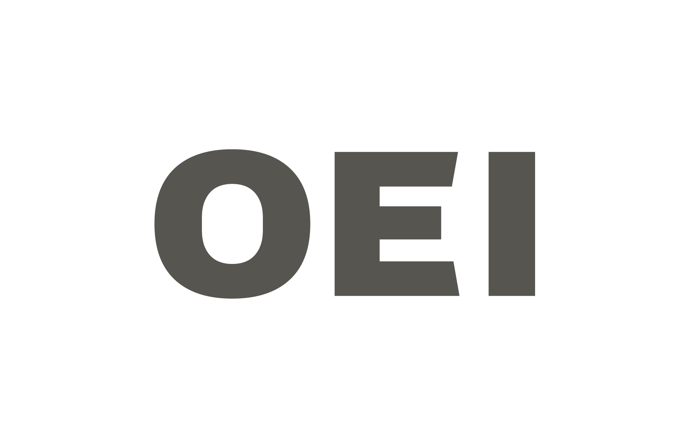

Dilemas de la ciudadanía contemporánea
Recursos para la formación ciudadana

Esta colección de viñetas y entrevistas pretende abrir conversaciones sobre los modos en que estamos y vivimos juntos en el mundo de hoy.
Planteamos cinco dilemas de la ciudadanía a partir de dibujos de Isol y video entrevistas con especialistas en temas que cruzan la experiencia cotidiana compartida. Los desafíos de la vida en común, la expansión de los discursos de odio, las subjetividades que se construyen en nuestra vida conectados, la algoritmización de las sociedades y las dificultades para pensar en el futuro como proyecto colectivo son algunas de las cuestiones que proponemos plantear.
Son recursos que pueden usarse en el aula, en formación docente o en otros espacios en los que aparezcan preguntas sobre la ciudadanía en estos tiempos.
Deseo cumplido
Deseo cumplido
La experiencia cotidiana está mediada por algoritmos: hoy cualquier pantalla responde a nuestros deseos y nos propone otros sin pausa. El orden algorítmico nos vende formas de ser, de ver y de mostrarnos. ¿Qué efectos tiene sobre la vida en común?
En esta charla Inés Dussel y la psicoanalista Perla Zelmanovich conversan sobre las subjetividades en el tiempo contemporáneo.
Conjuntos
Conjuntos
Vivimos en una era de múltiples fragmentaciones en un mundo en el que muy pocos concentran mucha riqueza. ¿Cuáles son las desigualdades más marcadas en estos tiempos y qué horizontes de igualdad se pueden percibir?
En esta charla Inés Dussel y el sociólogo Gabriel Kessler conversan sobre la necesidad de re pensar lo común ante la desigualdad.
Odio digital
Odio digital
El discurso público en redes sociales tiene mucho de odio y poco de encuentro. ¿Por qué crecen y se viralizan los discursos de odio en estos tiempos? ¿Qué podemos hacer para reconocernos en la diferencia desde el respeto y la tolerancia?
En esta charla Inés Dussel y el historiador Emmanuel Kahan conversan sobre los discursos de odio en este y en otros tiempos.
Futuro
Futuro
¿Cómo imaginamos el futuro? Más allá de las versiones distópicas de un mundo arrasado y las tecno utopías, pensar desde el arte puede ayudar a avizorar otros futuros.
En esta charla, Inés Dussel e Isol conversan acerca de distintas ideas de futuro y la condiciones para imaginar un mundo mejor.
¿Invasión digital?
¿Invasión digital?
¿Vivimos demasiado conectados? Internet y las redes sociales han funcionado como infraestructura tecnológica de nuevos tipos de participación ciudadana pero también como arenas de discursos de odio y desinformación. ¿Se puede pensar modelos alternativos?
En esta charla, Patricia Ferrante e Inés Dussel conversan sobre la ciudadanía conectada.
Créditos
Dilemas de la ciudadanía contemporánea es un proyecto realizado por el Área de Comunicación y Cultura de FLACSO Argentina, con apoyo de la OEI.
Las viñetas son de Isol.
El desarrollo del proyecto es de Inés Dussel y Patricia Ferrante.
Contacto: ciudadanias@flacso.org.ar